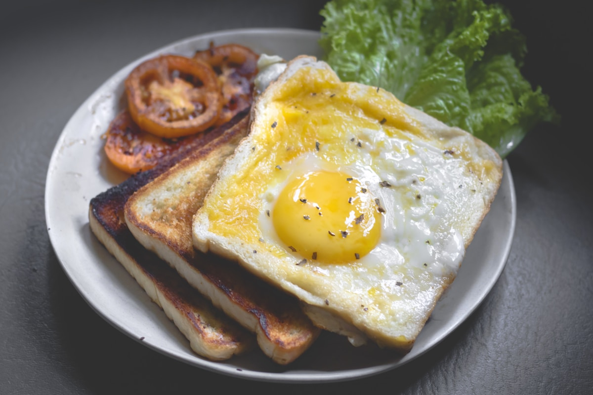

1. The Biochemistry of Umami Synergism
In classical taste physiology, umami (the savory fifth taste discovered by Dr. Kikunae Ikeda in 1908) is triggered when free glutamic acid molecules bind to T1R1/T1R3 taste receptors on the human tongue. However, what modern food science reveals is the phenomenon of Umami Synergism: when free glutamates are combined with purine ribonucleotides (guanylate and inosinate), the perceived savory intensity on the palate multiplies by up to eightfold.
At Basil Broth Camp, we apply this molecular synergy to craft 100% plant-based broths that possess the mouth-coating richness, viscosity, and depth typically associated with multi-day animal reductions.
2. The Triad of Botanical Umami
| Botanical Source | Primary Active Molecule | Extraction Mechanism | Flavor Contribution |
|---|---|---|---|
| Atlantic Wild Kombu Kelp | Free Glutamate (2,200 mg / 100g) | Cold soak & sub-60°C gentle steep | Clean, ocean-mineral savory cornerstone |
| Sundried Shiitake / Porcini | Guanosine 5'-monophosphate (GMP) | Warm hydration & slow simmer | Deep forest earthiness; multiplies glutamate perception |
| Charred Sweet Alliums & Roots | Caramelized pyrazines & allicin | Dry-pan roasting until blackened | Rich Maillard sweetness and smoky complexity |
3. The Cold-Water Kombu Extraction Method
Never boil kombu seaweed. When heated above 65°C, kombu releases bitter alginate slime and harsh iodine notes. Instead, soak dried wild kombu in cold spring water for 12 hours in the refrigerator. Slowly bring the water to 60°C, remove the kelp sheet immediately, and use this savory mineral dashi as the base liquid for your vegetable stock.
4. The Power of Sundried vs Fresh Mushrooms
Fresh mushrooms contain low levels of free guanylate. However, when shiitake or porcini mushrooms are sliced and dried under natural sunlight, ultraviolet rays trigger enzymatic reactions that convert cellular ribonucleic acid (RNA) into concentrated guanosine monophosphate (GMP), creating an umami powerhouse.
5. Finishing with Opal Basil & Cold-Pressed Oils
To balance the deep savory weight of mushrooms and kombu, introduce Dark Opal or Thai Holy Basil during the final steep. The bright herbal clove and camphor notes cut through the richness, while a gentle drizzle of cold-pressed extra virgin olive oil coats the tongue, extending flavor persistence.
6. Salt Chemistry and Umami Potentiation
Umami receptors require trace sodium ions to achieve complete conformational lock with glutamate molecules. Under-salted broth tastes hollow, regardless of how many mushrooms were simmered. We utilize unrefined grey Celtic sea salt, which contains 82 trace minerals (including magnesium chloride and potassium), enhancing savory roundness without sharp chemical saltiness.
7. Building Plant-Based Viscosity (Mouthfeel)
Animal broths derive body from dissolved gelatin. In plant-based stocks, viscosity is achieved by slow-simmering high-pectin ingredients: charred leek green tops, whole roasted parsnips, and golden flaxseed decoctions. This creates a luxurious, velvety mouthfeel that coats the palate naturally.
8. Frequently Asked Questions on Umami Extraction
9. Conclusion
Mastering the umami matrix proves that plant-based stocks need never feel thin or compromised. By uniting glutamates, nucleotides, and fresh garden basils, you create broths of world-class gastronomic authority.
10. Mathematical Ratios for Peak Umami Potentiation
In our culinary flavor laboratory, balancing umami components adheres to precise molecular ratios. While individual palate sensitivity varies, the optimal baseline ratio for savory synergy in a 4-liter vegetable stock is:
- Kombu Kelp (Free Glutamate): 20 grams of dried wild Atlantic kombu cold-soaked for 12 hours.
- Dried Shiitake / Porcini (Guanylate): 35 grams of sun-dried mushroom caps, rehydrated in 500 ml of warm spring water.
- Caramelized Alliums (Maillard Precursors): 450 grams of yellow onions and leek whites seared to dark caramelization.
- Mineral Sea Salt: 12 grams of grey unrefined Celtic salt added at the conclusion of cooking.
11. Rehydrating Dried Mushrooms: The Secret Soaking liquid extract
Never discard the water used to rehydrate dried mushrooms! During the soaking process, water-soluble guanylate nucleotides and earthy fungal pigments leach directly into the soaking liquid. Strain this dark mahogany liquid extract through a fine paper coffee filter to remove any residual forest grit, and pour it directly into your stockpot as an intense umami concentrate.
12. Balancing Umami with Acidity and Botanical Bitters
A broth with excessive umami can feel heavy or cloying on the palate. To bring dynamic gastronomic tension into the stock, incorporate natural organic acids (such as a splash of raw apple cider vinegar or a handful of fresh lemon basil leaves) and mild botanical bitters (such as dandelion greens or celery leaves). This creates a multifaceted flavor profile that stimulates all five primary taste receptor pathways simultaneously.
13. Slow Maillard Caramelization vs High-Heat Charring
There is a profound chemical distinction between delicate Maillard caramelization and bitter, burnt carbonization. Maillard browning occurs when amino acids and reducing sugars react between 140°C and 165°C, producing hundreds of savory aromatic pyrazines, furanones, and thiophenes. If temperatures exceed 200°C, however, sugars combust into acrid carbon that turns stocks bitter and murky.
To achieve pristine caramelization, roast halved alliums and carrots slowly in a heavy, dry iron pan over medium heat for 20 minutes until the cut surfaces turn a deep, glistening mahogany brown before submerging them in cold spring water.
14. Umami Layering in Cold-Weather Soups and Porridges
When transitioning from light sipping broths to hearty winter sustenance, use mushroom-kombu stocks as the cooking medium for whole grains: steel-cut oats, farro, and wild rice. Grains absorb savory glutamates during boiling, creating complex umami porridges that satisfy deep hunger during cold mountain retreats.
15. Culinary Field Applications: Saucier Glazes and Reductions
When an umami-dense mushroom and kombu stock is strained and slowly reduced by 75% in a wide copper pan, natural vegetable pectins and glutamates concentrate into a glossy, gelatinous culinary glaze. This botanical demi-glace can be brushed over roasted root vegetables, whisked into warm grain bowls, or served alongside crusty sourdough loaves for an intense burst of savory complexity.
16. Integrating Umami Stocks into Modern Gastronomy
From fine-dining risotto preparations to restorative noodle bowls and plant-based pan sauces, mastering the umami chemistry of mushrooms and kombu empowers chefs to craft deeply satisfying menus that celebrate the rich savory bounty of our natural world.